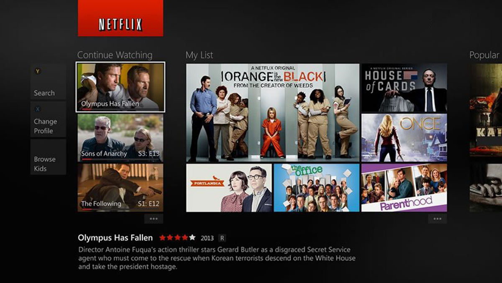
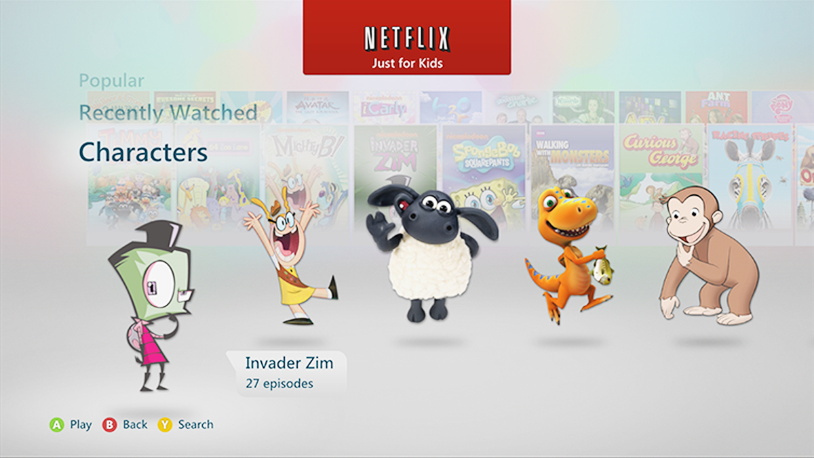
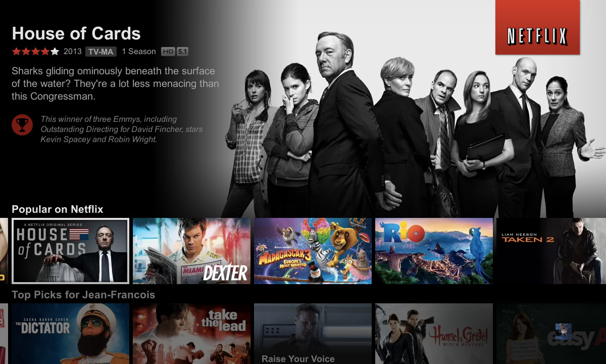

Sr. UI Art Director
Beverly Hills, CA - 2012
I came aboard Netflix just when they were rebuilding quite a bit of features. Just for Kids was something I directly worked on. Kids felt more familiar with the characters than the cartoon shows they were in, so the visual iterations to help select your favorites was put into development. Other features that I worked on were movie titles transitioning into landscapes. All titles were in their traditional portrait ratio's and now needed to accommodate the selecting process for Smart TV's, Game Counsils, and Mobile Tablets. There was quite a bit of work to convert popular titles from their old artwork and title fonts. The art department had to maintain movie branding while we translated for newly added countries.
Branding
Maintaining the Netflix brand was very important, especially while transitioning into other languages and screen ratio's. I worked on brand guides that helped accommodate the different development structures.


